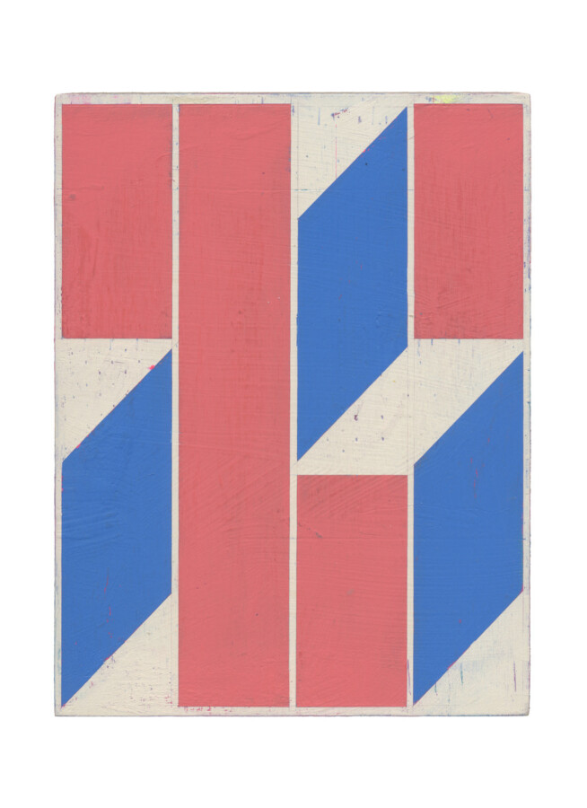

Alain Biltereyst: Great Moments
Devening Projects welcomes Belgian artist Alain Biltereyst to the gallery for his third solo show. Great Moments showcases a collection of recent paintings and large prints produced via reference images that inspire his carefully composed and intimate abstract panels. The exhibition opens on Sunday, May 3 from 3 – 5PM and continues until June 13, 2026. The exhibition is accompanied by a 32-page catalog.
The title Great Moments invites interpretation through multiple lenses. On its surface, it suggests an artist’s quiet effort to elevate modest source material, imbuing the ordinary with a sense of significance. Viewed more ironically, however, it gestures toward the precarious and often diminished notion of “greatness” in our current moment. It is within this tension—between sincerity and skepticism—that the works in this exhibition find their voice, engaging in a dialogue that reflects both aspiration and uncertainty.
Working from a visual language inspired by commercial signage, truck graphics, billboards, and street markings, he processes patterns encountered during his daily wanderings and carefully translates into the compositions that are at once simple but layered to reveal something of the age and history of his sources. The results feel familiar and somehow transformed — as if something always present but under-valued, and on the periphery of vision, has finally, patiently, been allowed to speak.
Rendered through geometric forms and a carefully calibrated and nuanced palette of opaque color, the paintings are restrained but strikingly candid. Traces along edges, visible brushstrokes, and the tactile grain of raw plywood assert a handmade presence working to counter the strict geometries of his sources. The format is consistently small and intimate inviting close looking rather than spectacle.
Within the conversation of contemporary abstract painting, Biltereyst is located at an enviable position. His work has traced how the elemental ambitions of early Modernism quietly survived and proliferated through the designed world — in corporate logos, delivery truck graphics, stenciled street markings. The loop is continuous: abstraction feeds commercial design, and commercial design feeds abstraction back into painting. There is a productive tension here between stripped-down formalist rigor and the messy vibrancy of popular culture, resolved not through irony but through genuine affection. As the artist has put it: “I’m easily blown away by the brutal elegant design on a passing truck. I can only hope that my work transmits that same feeling — that one feels ‘the street’ in my paintings.”
In an art world drawn to scale and noise, Biltereyst’s paintings propose something else: a slowing down. Each work stands alone, yet together they accumulate into a visual record — a poetic phrasing of moments harvested from the world as it actually looks.
Alain Biltereyst (b. 1965) lives and works in Belgium and has been showing his work internationally for several decades.
Recent solo exhibitions include Magenta at Xippas, Paris (2026), On Red at AntwerpArtBox (2025), Slow Noise at QG Gallery, Brussels (2025), Radical Garden at PS, Amsterdam (2025), and As If It Were at dr-julius art projects, Berlin (2024). Prior solo presentations include Hidden in Plain Sight at Xippas, Geneva (2023), Home at Baronian Gallery, Brussels (2022), Vice Versa at Adhoc, Bochum (2022), and Goings-On at Xippas, Paris (2020). Earlier highlights include Leaving the House at Jack Hanley Gallery, New York (2019), Nap #2 at Ellen De Bruijne Projects, Amsterdam (2018), Paceline at dr-julius, Berlin (2018), How and About What at Hagiwara Projects, Tokyo (2017), Oh My Days at Jack Hanley Gallery, New York (2017), Slow, Simple, Sweet at Brand New Gallery, Milan (2016), Dear Everyday at NoguerasBlanchard, Madrid (2015), and The Story Behind at NoguerasBlanchard, Barcelona (2014).